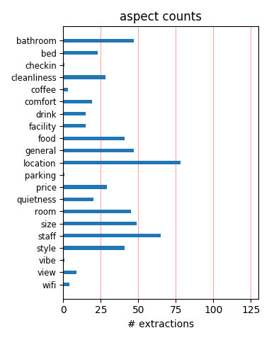
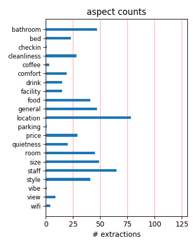

I stayed in "L" room but it wasn't really LARGE. I wonder how small are the "S" rooms. Decoration was nice, with a good bathroom. Location very good (quiet but not so far). The staff was OK and so was the view was OK.
Location, location, location...That's all I've got to say. Design was great (lobby, bar and rooms). Only remark: The guy at the reception was a bit snobby and not very friendly. He kept talking english to me and I'm Dutch (go figure). Have fun!
This hotel was perfect, great location, very clean and tidy and friendly staff. The bed was comfortable and nice to have a fridge. Really enjoyed our stay here, made better by the fact my boyfriend proposed in the hotel room! Will definitely go back!
We went to Hotel Vondel to celebrate my boyfriends birthday! Everything was perfect. Very nice room, we got a free upgrade to a room with a jacuzzi. The staff was very helpfull and advised us a very good restaurant for the saturday evening. We will return!
I loved the location of this hotel. It was walking distance to lots of clubs, restaurants and that amazing park. The museums are walkable too. The rooms are hip and trendy. Most important- the bathroom is clean and modern. They are tight and a bit cramped. Try to stay on a high floor.
I wanted to take the boyfriend to my country of origin. Pits of a hotel, bedroom was a cupboard, bathroom stunk and was so 1970s. Appalling and it cost me more for the weekend with flights than 5 days in Rome in a proper 5 star hotel. Do not bother as you will be really, really disappointed.
Perfeckt location, near Leidsplein and Vondelpark! Very nice staff. We got a room in a sepearet bulding, but that was not a problem at all! The room was very small, but cosy!!, you get what you are paying for! If you want bigger space you must pay a bit more! We are very happy with the hotel, and we will be back!
Our hearts sank the moment we open the room door. The room was extremely small. There was no walking space. Throughout our stay, we had to jump over our suitcases on the floor, or trip over them. The sink was cool designer style. But it was so shallow that it's not possible to fit your hands underneath... Stupid design...
We stayed for the weekend and had a lovely trip in Amsterdam. Location of the hotel is very good, near to Leidseplein and Museum District. We had an nice executive room which was spacious and had a seperate walk in shower. Room was clean and service was great. Also enjoyed the nice breakfast buffet, try the fresh made pancakes!
We stayed in the hotel for romantic weekend in Amsterdam. The hotel is located in a perfect spot, near to the centre and the museums. Our room was perfect, we had airco and the bathroom had a jacuzzi. There was also a lovely garden, were we enjoyed our drinks. Breakfast was good and the staff was very helpfull to make our weekend perfect!
Wonderfull location, but be aware that there is a big difference between standard dbl and executive room. Standard dbl rooms are not in the main building.There are acctually in the building 20 m from the main one , and it is horrible. Tiny elevetor, tiny rooms. But the executive rooms in the main building are great! Front desk- average.Breakfast-fine.
I tried to have an hotel that looks modern and is not too expensive. Vondel Hotel was perfect. Good location (near museums and near trams). Staff was extremely nice and helpful. Rooms were modern and confortable. Breakfast is good in a nice ambiance. We could ask for no more. It felt always good, when we arrived at the hotel. Pity there is no free wi-fi.
I stayed in room 201 which was a spacious room facing the street with balcony on which I was allowed to smoke my cigarette. The room was clean and the bed comfy. The lobby was trendy - I did not had breakfast or dinner at their restaurant although it looked cozy. The staff was really nice (thanks Carla for all your help) and I had a good stay in this hotel.
The Vondel is in a very good location, but the price does not fit to the rooms especially clean! The rooms are SOOOOO small and noisy, very modern equiped but not good maninained. The shower door does not close correct so that the whole bath was under water - the bath had max 4m2. So if you want to stay in a small room - for big budget...stay in this hotel.
The hotel is very well located, close to good restaurants and Vondel Park. Nice, modern and beautiful decoration. The room was a little disappointing for the price: too small and the bathroom was not so good. The shower door didn't close and the bathroom was totally wet after shower. My mini freezer was broken and the maintenance guy took too long to fix it.
What a lovely hotel! We read all the reviews and were very curious what to expect! But is was great. The room was not big but had a very nice and efficient design. The bathroom had a rain shower. The breakfast / bar area is very cosy and the staff is great! Very personal service. The location of the hotel is perfect, near to the Rijksmuseum and the Leidse square.
We stayed in the Vondel having previously stayed in the sister hotel, the Roemer, which we had loved. The Vondel is not up to the standard of the newer Roemer, and is very expensive. The room was a little tired and some things had been broken, such as the controls on the spa bath. Our room was on the ground floor and was noisy when people walked past late at night.
Trendy city centre hotel, but although our room had a shower and a bath tub no shower handle was available neither in the shower or the bath tub. We still wonder why the management took the decision to remove them... Anyway, breakfast area was very inviting and the overall room experience above avarage. Situated in a quiet steet near to many major Amsterdam attractions.
Overwhelming sewer stench in prison cell size room. Indifferent staff. Is there a manager? In hiding? All requests for help ignored. Predatory pricing of these substandard rooms. Pickpockets at entrance can easily take the lift to upper floors and attack anyone in the dark winding corridors. For health and safety, try one of the many clean comfortable hotels in the area.
Last night was my second stay at the Vondel Hotel. This time it was a lot better I must admit. I specifically asked not to have the basement room and the request was respected. This time I stayed in a suite in an adjacent building (approx 10 meter walk). This room was very spacious in every respect. It had 2 bedrooms, a seperate diningroom and livingroom and it even had a kitchen. I guess I was lucky to be upgraded :-)
Location, location, location. This hotel is perfectly situated near the museum, the canal boat office, great restaurants, the shopping district and a casino. The rooms are quite tiny and not cheap. The staff at the hotel were ALL very courteous, helpful and just great to deal with. You have to realize that you are in Europe and can't expect to find NA prices and conveniences. I would stay in this hotel again and again.\
I'm nomally pretty easy going when it comes to hotels, but this place was the pits. Just a few of the problems -- the hotel is VERY noisy, there's no airconditioning in the room, the bathroom had the previous occupant's used amenities, the lighting in the room was poor, electronic room key didn't work properly, the ground floor rooms offer very little privacy from street traffic, the breakfast buffet was infested with bugs...couldn't wait to check out.
Vondel used to be one of my favorite hotels in Amsterdam, but with an internet that you pay for and it does not work for 3 days on the raw after a lot of hassle and connecting the guest to the internet provider (swisscom) instead of trying to sort it out, bad breakfast, bad breakfast service (ordered my eggs twice and they never arrived), paying lots extras to get a little bit better room and ending up with a very noisy one, for sure that was the last time.
185 Euro, Ex Breakfast for a room so small that we had to plough through our own luggage to reach the toilet. During nights heavily smelling of Pot and also extremely noisy. Obscure hooks at the end of the bed, indicating some sort of... well... Dont go to this awkward place, that pretends to be "trendy", but still only has one choice of (expensive) wine that tastes somewhere inbetween balsamic vinegar and window cleaner. Staying in this place makes you feel cheap...
This hotel is fantastic. Just arrived from a vacation in France and wanted to spend a few days in Amsterdam on our way home to Denmark, we decided to stay at Hotel Vondel. Outside it looked very cosy and it was close to the canals and all the sights in Amsterdam. From the moment we came to the reception desk the hospitality was amazing. One of the great experiences was the beautiful room and the restaurant. The service was fantastic . We can really recommend this hotel.
Rooms are decent - Beds are comfy The bar is noisy and closes late, you sleep when bar closes You can hear all doors closing and it prevents you sleeping. Tv has little in the way of English channels Location is spot on Not enough new towels supplied Windows open fully to a nice garden area although the water feature is way too loud. It is certainly not a calming feature and sounds more like a drain unfortunately Porters brought cold soup Fridge contained out of date items
We stayed at the vondel for 2 nights at the end of march, and got EVERYTHING you expect form a boutique hotel, windey narrow corridors, eclectic decor and fantastic helpful service. Yes the rooms are quite small but they have beautiful big comfy bed's with fantastic quality furnishings. The location was slightly out of the centre but we we're where we needed to be within a ten minute walk. I would definetly recommend this hotel to frinds, and we will definetly be coming again.
The hotel Vondel is a good 20/25 minute walk from the station but perfectly situated in a nice area near to the Liedesplein which is full of bars, shops and places to eat. The staff in the hotel were amazing, always friendly, helpful and polite. The decor downstairs was in a boutique style very comfortable and classy. Breakfast was lovely with soft music , lots of choice of food and drinks and well worth the money. The rooms were fine and quiet (we were on the 5th floor though)
Staff was helpful and friendly. Room was very nice and clean. Stayed in a triple, which was extremely spacious. Bathrooom was spacious as well. Price was great, too. I loved the location since it was a on a quiet side street but a couple of blocks from Leidseplein, where there are tons of restaurants and bars/clubs. (Those looking to be close to the Red Light district should not stay here as it is a decent distance away although totally walkable.) I would definitely stay here again.
Stayed in this hotel for 2 nights before leaving for Italy and enjoyed my stay very much. The night before checking in I was reading the reviews above and I must say that i cant understand the complaints, because I had a wonderful experience. With the nice staff and great location, nice decorated rooms and good service, I can only rate with an "excellent", when comparing this hotel with the service, the rooms and room rates of other hotels in which I stayed in Amsterdam before (maybe an hoax??).
Having read all the previews reviews I was relactunt about my stay in Vondel hotel. I was positively surpriced by the outcome. The hotel was excellent placed close to the centre and main tram stations. The breakfast was excellent and the people were very friendly and helpful. The room was very nice although small and quite noisy because of the walls. We had to walk outside to get in the main building again but it was nothing bad. In general the hotel served well and the ratio price/service was very good.
My wife took me to Amsterdam for my birthday last month and we stayed at this absolutely charming hotel. From the minute I walked through their doors I knew we were in for a treat. My first impression proved very accurate. The service, our room, breakfast, their garden and the atmosphere were all top notch. The hotel is also located close to everything...... museums, shops, Vondel Park, markets, etc. I was very impressed all-around and will undoubtedly make Hotel Vondel my home whenever in Amsterdam! Enjoy!!!
Hotel is really Well located and design is nice, but my room was on the basement... I read the comments on tripadvisor about footsteps noise before leaving and I thought it would be bearable; it wasn't! On top of that receptionist were not clear on what was included with the room; I thought breakfast was included, finally not and at 20euros per breakfast, I found it really expensive for a breakfast where no more croissants were available at 09.30 in the morning. It was not a bad experience, but not a good one at all.
just got back from a short break to amsterdam. we booked the vondel hotel and had a woderful time. yes the room we had was small. but when you are only in the country for a couple of days you don't spend that much time in your room. the room was however spotlessly clean and contained everything you needed for your stay. the hotel staff where very friendly nothing was too much trouble. the hotel is easily reached from the central station by tram number one which stops 200m from the hotel. i would definitely stay again.
I was really looking forward to staying here, as I had read some great reviews, and the pictures I had seen of the hotel looked nice. It didn't disapoint when we got there. The main part of the hotel (reception/bar area) was really nice and classy. However when we were taken to our room, we had to go outside to get to it, as it was in a different part of the hotel, which unfortunately, wasn't as nice. The room was quite small, but had all the essentials. I would stay here again though, but would like to of had a room in the main hotel.
My husband and I stayed here for 3 nights in June and initially loved it, the rooms are specious and nice, the hotel is located in a quiet street only one block from leidseplein, a very central square. We were however struck with how RUDE the receptionists were- already a arrival they were rather harsh and unfriendly, and when we came in one day in the evening and our beds had not been made up she blamed us and then continued stating that she was just the receptioninst and had no idea- very unprofessional. For the rest the stay was pleasant.
Room was very clean... bed comfortable .... shower had plenty of hot water if you know how to set the knobs .... staff was great and Ms. Susan was awesome. had plenty of info to share at the front desk and always had a smile on ..... we didnt eat there but the cafe was crowded on the weekend ....if there are 2 of you and you want to be off to the side ask for room 535. the area its located in was very easy to get in and out of .... made the trip the best .... if you want a nice room with everything you need then stay at the Vondel ,,,, we called it home while we were there
This hotel is located in the museum district which is a short tram ride from dam square and central station and most of the city must see places. It is a small boutique hotel. They had free laptop for people to use in the back of the restaurant which seemed to be occupied most of the time.Rooms were very clean but a bit small. Reserved a jacuzzi room but it was not worth it. The gentleman on the check in counter was not helpful or friendly.It was not a cheap stay, more than 150 euros per night, so not the best choice for budget travelers.Bed was a bit too soft for me, felt like I had not a very good back support.
Main criticism would be the size of the rooms. As they were also very dark with all the doors etc being black this made it worse. Bathroom and toilet were also very small. Toilet smelt of drains. The fittings were okay and the bed was very comfortable. The rooms were clean. Staff were very friendly and extremely helpful although a couple of them seemed very inexpierienced. We did not eat in the hotel mainly because we like to try different restaurants. We did'nt have the breakfast as this was very expensive even by Amsterdam hotel standards. Very convieniently situated for the city centre. Overall reasonable value.
We have just returned from a 3 night stay in the hotel. The main issues are the lack of cleanliness. The WC in the bathroom was stained with urine and blood. we asked for someone to clean it, and a man showed up and took the toilet brush, rubbed it around the toilet seat and then wiped it with a towel. Obviously this was a complete farse, and we complaint to the receptionist who accepted our complaint but did nothing to rectify the issue of cleanlisness. In addition, the mattress was terrible and old. For a four star hotel that is unacceptable to say the least. It is a shame that a 4* hotel in Holland should be so dirty. Avoid!
Thought this was a 4 star hotel. Room size disappointing. cleanliness not up to 1 star standard. Heating out of control, had to lie on bed with wet towel to stay cool. Building works going on in other part of hotel that were not mentioned on internet. ? 4 star. Staff OK Thought I was going mad so did my boyfriend, the room was actually on a slant. Woke up at 3:30 in the morning and found MICE in our room. We were offered another room but declined. Hotel gave full refund. We checked out in early hours found a GREAT hotel called the American hotel. 5 star hotel and cheaper than the Vondel. Thankyou American - you save our holiday!
We stayed in the Vondel for the weekend and had a most enjoyable time. The Lobby is beautiful, and epitomises "boutique hotel" to a tee. The double room we chose was, admittedly, small, but the space had been used very well, and so therefore this was not a problem. The breakfast was great, the patio area was great, and the communal areas were too. The location was perfect for what we were looking for (a quiet weekend), it was close to everything it needed to be close to, and the immediate area was very tranquil, and pretty, indeed. Upon our next visit to 'Dam we shall certainly be paying the Vondel another visit. THE VONDEL ROCKS!
Me and my boyfriend and his father went to the Vondel hotel in Amsterdam in the middle and end of Januray. The first trip at the beginning was a little different. They accidentally didnt check us in properly and I guess checked other people in our room and while we were sleeping had come into our room. The staff immediately made it up to us with sending a bottle of wine to our room. The staff was so nice, all spoke english and helped us get use to the city. This location was great. We walked every where. No need for a taxi or the trolly. I loved everything. Beds were great, bathroom, and breakfast was good. Definitely would stay here again!!!
I cannot Imagine any negative comments on tripadvisor about this Hotel. Me and my girlfriend were having a great stay!! The hotel is found on a great location in the centre of amsterdam nearby leidse square. the staff was friendly to book restaurants for us and gave us directions to the many nice areas the city has to offer. One day it rained so we stayed in for dinner and in the nice d restaurant. The whole atmosphere this boutique hotel including restaurant is breathing trendy but also relaxed. They spend a lot of time in the design and selcting art (loved the dog) also in the rooms. All in all we had a geat stay. thanks again Hotel vondel and until next time
The Vondel hotel is conveniently located in walking distance from all places in Amsterdam centre. It is in the old building, but it was recently renovated. Some furniture is ultra modern, like unusual shapes of water sink and shower. However, the value for money is low. I paid approx. 110 Euro per night during my 3 days stay. The room was extremely small. The were two bunk bends (one above the other), a table slightly larger than A4 paper already full of hotel stuff. The space between the beds and the table and clothing cabinet was just enough to pass through. Breakfast cost 19.95 Euro, which I rejected. I expect a decent dinner for this price, rather than breakfast.
Hotel Vondel was a perfect spot for our two-day mini vacation, right around the corner from Leidseplein, which is a very lively area in Amsterdam. Hard Rock, along with the Holland casino are nearby, also walking distance to the Van Gogh museum and tons of shopping. It was actually a very nice hotel. The rooms received a lower rating because of the slightly suffocating small size. Although we were fine and expected it, just be prepared. Sleep quality also received a lower rating because of the housekeepers. Early in the am after a long day and night in Amsterdam, I'm talking 8a, the last thing we want is to hear the constant banging of doors. The beds were the best in Europe so far. Service was great.
I was here on business and my client booked this hotel for me. And I didn't want to seem ungrateful..... but it was sooooo bad that I requested to move to another hotel. The internet (kinda important for business travelers) rarely worked. And although they have said they renovated, it certainly wasn't sound proofing. And they are STILL renovating! I could hear noise from the hallway, the lobby (I was on the second floor, around a corner!), really loud music from the outside "garden" and bar downstairs, other rooms, etc. And when I finally complained, they didn't seem to know what to do. I was without internet for 2 day! I wouldn't recommend this hotel and now, neither will my client. Definately not a value!
The rooms were nice, well cleaned and a spacious. I must say i had the biggest room, the Executive room, for the same price as the superior room, for what reason i dont know. The roomservice aint what u are lookin for if u want luxurious diner. I will strongly recommend you to not order any food in this hotel. Besides that......... But the location of the hotel is excellent. 2 min walk to the park, and 3 min walk to some great restaurants clubs and what else u are looking for :) I read this site's comment before i went, and had a bad feeling when i did. But none of the complaints applied when i stayed. The staff is really friendly, and are willing to help you with your questions. After all i had a great stay!
Just wish to share the excellent experience I had during my recent stay in Amsterdam last weekend. We stayed at the lovely Hotel Vondel which is fantastic located in the centre of the city. Appearantly the hotel is newly refurbished and decorated and we loved it. This is one of those great small and personal hotels that you feel immediately at home. We had a beautiful spacious room with an excellent bathroom. The decor of the hotel and room is personal, fresh, tastful and modern. The staff is very friendly and helpful and on top of all, the hotel has a wonderful garden where you can enjoy some rest in the middle of the busy city and relax. I can only highly recommend this place, should you be going to Amsterdam!
We stayed at the Vondel for three nights and absolutely loved it! The staff are very helpful, professional and friendly. The hotel itself is beautifully decorated. There is also tons of great artwork displayed throughout. The location is perfect: close enough to just about everything but far enough away to get a good nights rest. The only negatives that I can think of are that wifi isn't free (10 Euro for 24 hours). Also, their restaurant needs a bit of work. We ordered the goat cheese salad which actually came out with brie on it instead and the roasted vegetable entree was gratin potatoes with green and yellow peppers in it which were not the vegetables listed on the menu. Food was good but not worth the expense.
After having booked a room at Vondel, I read the good and bad reviews on this site and decided to e-mail the hotel asking for a nice room. I quickly got a very friendly reply, assuring me that I would get a nice room. The first impression of the hotel was very possitive and the room we had booked was beyond expectations! It was spacious, modern decorated and clean. The staff was great as well as the location. The breakfast was one of the highlights of every day we spend in the hotel! I felt I got good value for the 200 Euro's I paid per night. I would for sure return to this hotel again and I would highly recomend this hotel to anyone who would be going to Amsterdam. I have included some photo's of of the hotel and our room.
This is a great bouquet hotel with super friendly staff. The rooms are well done and a good size for Amsterdam. For those who complain about the size have really not had a small room in Amsterdam. The rain shower is really fun and the bathrooms are nicely done even if sometimes they look a little better then function, artistic for sure. The one down fall was the pillows in the bed, which every detail is taken care of but the pillows were awful. They seemed like it was stuff with random pieces of foam which made it super lumpy and odd to sleep on. The hotel is nice walking distance to a whole bunch of places and though not centrally located is a perfect location for those who don't want to be stuck in the center of Amsterdam.
I stayed at Hotel Vondel five years ago, and was slightly concerned by the poor reviews recently as it is on the expensive side. We were very happy that we had nothing to be concerned about. We had booked a small standard double and there was plenty of room, much bigger than a lot of bedrooms in Amsterdam. The room was on the third floor, as far from reception as you can get. Watch out which lift you get as you can't access all of the third floor from the first lift. The room was modern and smart, and cleaned perfectly everyday. The bathroom was the best bit, with a massive double shower and double his and hers sink. There were load of good tv channels and the bed was really comfy. Would definitely go back, if we could afford it.
I arrived at this hotel when amsterdam had a heatwave(35°C in the evening) Check in was very quick, no questions, they ask you just name, that's it(no more - no less). They don't ask you if this is your first time, no welcome drink, etc. The kind reception girl told me my room was at the second stairway case down. I though a room in the basement. To my surprise, when opening the room, the room had an enjoyable atmosphere but no airconditioning, no remote control for the TV, bathroom's floorheating couldn't turn off (with 30°C in room) and the bathroom had an unpleasant smell. Next morning, i was out again. Checl out very smooth, no questions, no advise, just pay and bye bye. Price wise this hotel is ok, but do not expect high service.
Me and my boyfiend just returned from a 4 night stay and would definetley go back On arrival receptionist staff were more than helpful towards us , giving us handy tips and really welcoming, The room was very nice small but enough space for 2 of us but the amazing shower made up for it , the facilities in the room were more than handy eg - kettle , hairdryer and t.v The location of the hotel is spot on in a nice quiet street but 2 - 30minutes walk from main town deending on were you want to go We eat out alot of time but that was mainly because we were out early in day , but spent most nights in hotel as it was so nice, All in all a amazing hotel and very unique , everyone that works there were friendly :) Will be staying there again if we return :)
The title of this review come from the particular style of the hotel, in fact, black is the main colour for rooms, bathrooms, passages and even the christmas tree’s balls. Despite this particular that could be pleasent or not, I enjoyed my stay in this hotel for the following reasons. Quality-price ratio is high because in Amstardam is quite diffucult to find a central hotel with the same Vondel’s prices; great location opposite Leidesplein at the beginning of the museum’s quarter; kind and young staff; clean rooms not small. However there is a negative point that I want to mention: the hotel is a 4 star category but in my opinion the right value is 3.5. I cut 0.5 points because the breakfast has not many variety of dishes, and the bathroom is rather old.
A central location, easy to get anywhere. Hotel staff are friendly, helpful and have good local knowledge. We did not use the hotel for food and drink more than once, has we found it be a little expensive for what you got with not much choice. Our room was fine and very little noise was heard. I would strongly advise using local transport for getting around, it is excellent. If arriving from schiphol airport, tickets are by the exit, from yellow machines, get ticket for Central station. From there, numerous trams go to the Museum quarter where the hotel is located. Travelling on local transport is very cheap in comparison to taxis and shuttle services. We would certainly stay here again and would recommend Amsterdam to any one. So much variety and many things to do.
A friend of a friend booked this hotel for us. After it was booked we decided to look it up on TripAdvisor and were a bit worried with some of the reviews. We called and asked for a good room and were assured by the friendly and pleasant staff that it would not be a problem. We were even asked if we wanted a street or courtyard facing room. We had nothing but a great experience from check-in to check-out. Our room was lovely. The staff were extremely helpful when it came to suggestions of where to go, places to eat, etc. Even arranging reservations for us. The bar in the hotel was wonderful too, with a relaxing terrace in the back. And the location was perfect. Walking distance to boat tours, Vodel park, the Van Gogh museum, downtown core, etc. We had an amazing experience.
Staff absolutely fantastic along with location, but i have to mention the decor which is a throw back to the eighties very black and white which just gives the rooms etc a dull and uninviting appeal - i think we had about 5 lights on constantly. Must admit the lack of a shower curtain was a bit of a stress - water will go everywhere - okay for a wet room but guess what it isn't. The hand basin in the room is one of these ultra trendy things, but be warned you cannot fit your hands full under the tap - i think design took over from practicality. Last thing dont drink at the bar unless you like getting seriuosly ripped off a whiskey and a glass of wine will set you back 20 euros. In the UK we are used to a small glass of wine being 175 ml in this bar it's more like 20ml at triple the cost.
First off, know that the Hotel Vondel is currently undergoing renovations. If you are at all set off by the slightest inconvenience, then this is not the time for you to stay at the hotel. Wait a few months, then, and you will be pleased. I stayed at the Hotel Vondel for six nights at the beginning of November 2005. Although the renovations are nearing an end, the hotel changed each day. It was like a new surprise each time I crossed the threshold. Parts of the mid-renovation efforts looked crummy and were a bit unpleasant, but it is a work in progress. When it is all complete, this will be a top notch little boutique hotel. I scored it as above average because it is - even a bit disheveled during renovations - a good little hotel for a decent price. I can only imagine what it will be when it is complete.
Amsterdam is definately one of our favorite places in the world, and we like to come here often. Friends that came over in december recomended this hotel, so we booked for 4 nights. We were very surprised by the earlier comments made in another review, because we had an AMAZING time in hotel Vondel! Yes the rooms might be a little bit smaller, but what do you want? It's Amsterdam! We were definately impressed by the friendly staff, and the hotel has an great atmosphere! The English server at night really went out of his way to find more great places for us to visit since that was the 8th time in Amsterdam. He made us a list with great idea's. Since we're comming back in summer we already booked for another 4 nights, and we are looking forward to return to this hotel. Stephanie, Antoin, Anton, and Sebastien ( Bruxelle )
While we were waiting to check in 3 seperate guests/parties were complaining about their rooms and asking to be moved. Not a good start. Also there was a number of small kids running about the foyer and bar, so it was mayhem and noisy when we walked in. When it was our turn to check I asked the person who was checking us in if there was a sewing kit in the room as I had torn my dress getting out of the taxis...she rolled her eyes annoyed at me and said she'd send it up to the room, it never arrived. She was an intern and when I went down later to try get a sewing kit a very nice staff member gave me one. I felt claustrophic throughout my stay, the rooms are tiny which I knew about but the corriders are like warrens and hopefully there will never be a fire as you'd have no hope of getting out. Wild horse couldn't drag me back.
I stayed here with a friend recently. The hotel was clean and comfortable with ample room,on arrival we were given a free upgrade which was nice. The Decor was nice , The beds were really comfy & the bathroom was clean.. The shower was really good, we had a little small balcony with 2chairs on which was nice for the air on a sunny day - The staff seemed friendly enough when we spoke to them, The only bad thing if I were to nitpick would be the layout can be a bit confusing to find your room.. We had slight trouble finding the hotel as we were never in Amsterdam before - The website we booked it through didn't seem to offer us directions. Basically if you get the tram to Leidseplein look for the Marriot Hotel & it's on the road adjenct to that. The area seemed very well kept and not dodgy at all. We were really happy with our stay and would very much stay here again.
Very chic and modern decor. Room was huge, bed was even bigger!. The bathroom was gorgeous with a funky style shower and sink plus a bathtub big enough for 2! The room had nice ammenities and clean towels daily. Very comfortable layout with plenty of space. Our room faced the street and had a little sitting veranda. Hotel staff was very helpful and polite. We ate all of our meals outside of the hotel and saved a bundle.(yes, breakfast too!) Amsterdam has a lot of different cuisines and even vegetarians are catered to. NOTES: This is not a sound proof hotel. We bring our earplugs on all trips and were especially glad here since our room was next to the stairwell. Amsterdam is a party town and you will hear people on the streets at late hours. Bring earplugs to sleep and you should be fine. The sound was not an issue for us so we still give this place an excellent rating.
We had booked a large double room which was a great size but lacking the cosy feel I like in a hotel. It just didn't have the 4 star quality I'd looked forward to. No Mirror in room so had to make do with the one in the bathroom where the light wasn't very good. The bedroom lights in general were very dull although we did have great big windows. Room service kept forgetting to replace coffee/milk in our room and the movie channels didn't work! On the plus size, the room was very clean and spacious and the staff were lovely and very helpful. Some of the art work on the walls were gorgeous. Walking distance to a fantastic range of bars/shops/restaurants. Vondel park is also a 2 minute walk away and Anne Fr ank House 15 minutes. The street is so peaceful and you really feel like you're miles away from the busy town centre. Would probably not stay there again as I feel it wasn't good value for money.
The location was perfect close to all attractions and city centre, all in walking distance.The hotel rooms were tiny, but then again we went for the budget small room. The bath room floors was so ice cold. When we called reseption, the house keeping came and told us to let the hot wather from the shower run to heat up the floor. Did not really help that mutch. And the bathroom was always cold. The sink was itsy bitsy tiny, you almost had spit ekstra long when you were brushing your teeth just to hit the sink. Because of the shelf placed over the tiny sink. Didn`t like the bathroom at all! But the rooms were clean and very helpfull staff! And ok beds, as i can remember... Would not go back. But didn`t hate it :) If you dont mind freezing your but off while taking a shower ore just taking a S... Sure i would recomend it. Really depends on what youre looking for. Good luck! :) PS Really bad internet conection.
We've just returned from a 3-night stay at the Vondel. We were first placed in the annex (making us feel like second class citizens) in the smallest room I've ever had the misfortune to stay in. We could barely walk around the trendy but packed-in furniture, the wardrobe was tiny, the fridge wasn't working and you could only stand sideways infront of the sink. The room was so hot it was almost unbearable. It was trendy but without any thought for functionality - I'd rather have stayed in a Travelodge! After complaining the next morning, we were upgraded to a larger room at the front of the main building. The experience then could not have been more different. The room was spacious and a joy to stay in - although admittedly still very hot and as other reviewers have pointed out, noisy in the mornings. But you can't have it all. It has a lovely garden and the location was great. I'd go back (if guaranteed a large room.)
I saw all the reviews complaing about small rooms so was expecting the worse, however as we had booked a triple room we were pleasantly suprised. The room was spacious with large windows, 3 proper beds, not a third roll-away as offered by the Radisson (at over twice the cost!). The hotel is in a lovely quiet street, but so close to the city. It was so easy to find, and a breeze to get to from the airport via train and tram. The staff were friendly, helpful and courteous. (We had no problem getting back in in the early hours, something which had worried me!) We didn't have breakfast in the hotel because there are so many fabulous cafe's nearby serving the best coffee ever. The room was clean, the bathroom well equiped and the shower worked a treat. We didn't have time to switch the television on, so can't comment on that: there is just so much to do in Amsterdam, a weekend just isn't enough! We had a very comfortable stay at the Vondel, and would definitly go back.
Myself and my husband recently experienced a three night stay at hotel vondel. On a late evening (10pm) check-in we came acrossed a locked door and no one on reception to let us in. After 10min and lots of knocking someone let us in. This isn't a huge deal and could be overlooked if our stay was a great one but sadly it wasn't to be. Firstly our room was large with lots of character which was great. But bathroom was a shoebox, bed was broken on one side (springs had collapsed), heater broke down, and bed linen was for a double bed when the bed was a queen. Maintence gave us a replacement heater which was great but we almost melted when the so called broken heater came on during the night. Staff were only so so with most appearing not to know what was going on. We also experienced mice in the restaurant with another family pointing this out to staff who didn't do anything. Overall this hotel was a below adverage stay with it being the worst of our European vacation
I stayed at the Vondel on Queen's Day weekend (end of April) this year. I was happy to get any room as I had not planned on being in Amsterdam till the last minute. The city is FULL so book ahead. The anex at the Vondel (the site a few meters further east on Vondel St) is just as described: Decorated (if you can call it that) in black paint and purple carpets. The hallway is indeed scary when you first enter. The room, however, was quite workable. I had a comfortable double bed and a nicely done bathroom. On Friday evening there were quite a few party people on Vondel street, so it was tough to sleep. On Saturday night, I was too tired to notice anyone eles's noise. Usually I stay at the Marriott, near by, and usually pay no more for the best room at the Marriott, but for Queen's Day, I was happy for any bed in the center of the city. The only other choices were out by the airport. For a low enough price, the Vondel could be a good value. At 200 Euro a night, it was not.
I was a little worried about this hotel as I had read a few bad review of it but I was worrying about nothing. This hotel was perfect for a 4 day break with my boyfirend for his 30th birthday. The hotel is very clean and tidy, staff are friendy- especially restaurant staff- and really efficient, the place is full of amazing pieces of art and our bedroom (401) was amazing with little sky lights in the bathroom, beams painted black and really spacious and comfortable with a wicked little TV- I loved it. The location is also excellent as it is so near to Leidesplein where most of the restaurants, bars and coffe shops are. Also so close to the Van Gogh and Rembrandt museum. To give you an idea it is a few second away from the town centre Marriott. Breakfast is great - continental and English, loads of fruit and anything you could want. Mini bar is amazing and pretty cheap too with loads of drinks and snacks.. Anyway, I think I've raved about it enough, definitely worth the money.
We stayed in Hotel Vondel for a one year aniversary. The hotel was nice and clean, the staff were helpful and it's location was out on the edge of the city away from the hussle and bussle so if you don't mind a 10 minute walk into the center and want somewhere fairly quiet it's excellent (it suited us fine!) We would stay here again with no hesitation but would insist upon booking that we were not given a basement floor room, the basement rooms are directly below the restaurant, all you can hear all night and early in the morning is VERY loud chair moving/table moving and loud talking and people walking about, it made sleeping very difficult before midnight! The breakfast was excellent, with a good selection of croissants, rolls etc etc. they will also provide a cooked breakfast on request. We did see a mouse one evening running around in the bar area , it was cold outside and he probably wanted to stay somewhere warm, overall it's a nice hotel so why not in the hotel Vondel!!
I arrived early Sunday morning 8 am after a long flight - the receptionist informed me that 1 room was clean, it was a basement room. I prefered to have a room so I agreed with this deal. The room was facing the garden. I got some sleep and did like the view but not the basement. I went to reception in the afternoon and I was told that I could move to another room without any problems! My luggage was moved by the hotel staff and when I came back it was a little suprise when I entered the room: I think I was upgraded to a bigger room, ground floor, facing garden again and with a jacuzzi! I stayed only for 2 nights, but wish I could have stayed longer. As a female traveller I felt very comfertable in this room. The receptionist where friendly and the hotel was nice decorated. There is a lot of art and the atmosphere is nice all over the place. I did not use the bar and breakfast. Next time I will ask for the same room and I look forward staying in this hotel again in the near future.
This place is fantastic - in a great location (near Leidseplein), so beautifully decorated, and outstanding service. I took my boyfriend here for 2 days for his birthday in May. I only booked the place because it had good reviews, and was in my budget. I wasn't expecting it to be as fantastic as it was when we arrived. The rooms and the lobby/dining area were obviously decorated by a high-profile designer, and look like something out of a magazine that you only wish your house could look like. Because we arrived very late at night, the room we were given was (apparently) smaller than the one had booked. We were in awe of the room, so didn't notice(!) until the man from the desk phoned us to say that they were giving us breakfast for free during our stay because of the room mix-up. The breakfast was a-maz-ing. Soooo good. I paid much more on our last trip to stay in the NH Amsterdam, and this hotel is much, much nicer. I will be staying at the Vondel on all my trips to Amsterdam from now on!
We stayed in the Hotel Vondel for a couple of nights this May, and on first impression it's quite a cool, kooky place and good value for money. But the service leaves a bit to be desired, it's mostly not with a smile, and the double room was such a let down. If you stay here make sure you're not in Room 101 which is next to the lift and stairs and in the hotel's basement. The noise - from the traffic outside on the street, on the pavement, from the automatic front doors, the lift...you name it, we could hear it. Amplified. Such a shame, as it could be so nice, however it really lives up to it's misnomer. We asked to change rooms and were offered a twin room, when doubles were mysteriously still available on their website - we're talking a Monday night here. Business travellers beware, you're probably better off paying for internet access through your phone than being charged over 15 euros for 24 hours worth of internet access. Come on Hotel Vondel, pull your socks up and put conditioner in the bathrooms, too.
We stayed here for 2 nights at the end of August. I know it was a couple of months ago but I wanted to post my comments as I think we stayed in the same room as L2003 who posted the review "Pleasant stay at Hotel Vondel but 1st room was tiny!!" We arrived at about 8am and couldn’t get into our room until 2pm, however, the polite receptionists were happy to store our cases whilst we explored the city. We soon discovered everything we wanted was within easy walking distance – Vondell Park, The Van Gough Museum, Heineken Brewery, Canal Cruise companies etc. When we did get into our room – it was an attic room with absolutely no view. I agree it was very very small but as we were only there for two nights we decided to get cosy and stay put besides it was so clean and had lovely soft white sheets and towels. Everything about the room and bathroom was very modern and stylish. We would not hesitate to stay there again. Clean room, comfy bed, great location, polite staff and reasonable price - what more do you need?
A very pleasant stay overall. My partner and I enjoyed a long weekend in the hotel. We had booked an Executive Room but when we went to check-in in the evening, we were told that they didnt have any available! We had read about the same issue from past visitors, so thought it best to contact the hotel to make sure we got an executive room. All was in order the day prior to our arrival. However, it seems that the front desk/reservations still were not organised. In the end we stayed in a twin room for the first night, and then moved to the correct room for the following evenings. Apart from that there werent any major problems. The hotel bars staff were very very pleasant, making cocktails for us to our requests. The front desk staff werent quite as enthusiastic though. The garden was really nice too. A japanese type garden with water features. Its nice to lie about on the large sofas outside under the sun. Overall, it was a very pleasant stay. Room was gorgeous, location was excellent and very convenient and quiet.
As others have stated in previous reviews, I arrived at the hotel with my girlfriend unsure of what to expect, mixed reviews on this hotel had left my imagination confused and my hands a bit shaky. I can with complete honesty that I was extremely satisfied with all aspects of the hotel. Staff were friendly, the decor was certainly not tasteless as stated in a previous review, in fact I found the stay refreshing relaxing and immensely pleasurable. Ok yea you could smell a bit of pot when wandering through the corridors at night but what do you expect in Amsterdam. The location is perfect central, but tucked away in a secluded and very Dutch feeling street. You are around a 3 minute walk from central restaurants, bars, coffee shops, etc and between a 5 – 10 min stroll from the main museums. I got a very good deal on this hotel, if I had paid 185 Euros for the night as stated in another review my report may not be quite so shining, but the good deals are out there, and this hotel has everything you could possibly expect from a 4* hotel.
Stayed at the Vondel from 24/10 to 27/10. Booked a medium double room through the internet, which when we arrived was very small (would not like to see the small double room). No mirror in the bedroom, has to use a mirror inside the wardrobe door, which while it was a good size,was difficult when trying dry your hair, as one had to stretch the hairdryer flex around the door(not exaclty safe). Over all the room was a little cramped, particularly as you entered the room, the bathroom door was to the right as you entered the room, so when you opened the door into the hotel room it blocked the bathroom door. However, the rest of the hotel was good, with a nice bar area and nice lounge area, with resident cat! The staff were friendly and competent (which was the case everywhere we went in the city). Good location in a nice quiet residential area, but still witihn walking distance to Dam Square and all attractions (Van Gogh, Rijksmuseum, Anne Frank House, shopping). Really pity about the room sizes. Would stay again if was sure of getting a better room.
After getting our room heavily discounted via booking.com we paid only 90 Euro for a double room. We arrived 3hrs before check-in and the hotel was pretty busy. Despite this the staff were very friendly, gave us an excellent map of the city and put our bags in storage. On returning to the hotel at 5pm the staff had resold our room as a family needed it and as grattitude upgraded us to the best room in the hotel, the executive suite! They even included a free breakfast, as if a massive room with it's own jaccuzi wasn't enough! The hotel is lovely, well decorated with a beautiful garden. A little expensive for drinks and food but then Amsterdam isn't exactly a cheap city anyway. Our room was huge with double shower and massive bathroom. A good selection of TV channels including a few English language ones was a nice touch while the missus took an enternity to get ready. The staff couldn't have been more friendly and helpful. The only downside is the long walk (1 mile) to Old Amsterdam at night as the trams finish before midnight. Highly reccommended. I'll certainly be going back next time, just hope they have to upgrade me again!
I stayed in this hotel during a business trip, all charges were supposed to go to my employer. They asked for my credit card for additional expenses and confirmed that the room was paid for in advance. A few days later they sent me an e-mail telling me all the rooms were charged on my credit card, even the rooms of other people who staying there and also were supposed to have their rooms paid by the employer. My employer tried to reason with them, they wanted to pay for the rooms and get things right but the hotel did not care, and did not want to help us out with this problem. I never claimed to be responsible for any of the other guest's rooms, which I still don't understand their reasoning for charging me with all of them. Of course my employer refunded me for the costs, but we lost some money since my credit card is international and there were taxes involved, plus the stress involved was unnecessary. Avoid this hotel. I know problems happen, but thats when you know if their service is decent or not. They did not try to help and did not care, which makes me wonder how they react to any one else's problems. Also the rooms were nice but too noisy.
Stayed here for 4 days in July during hot weather (so the a/c was appreciated). The hotel was in a good location, with many things easily walkable. It was converted from several very old houses, so narrow, steep stairs (but lifts also available). Our room was small but adequate (although the fan in the tiny bathroom wasn't working and wasn't fixed whilst we were there, despite asking). Pleasant small terrace garden available. Main gripe (besides the awful "artwork" which looked like it had been done by an inebriated young child), was that everything was extra (even though the room itself wasn't exactly cheap): breakfast (cir. €19 pp per day, but good, provided you don't come down too close to the end, when things were running out); movies in the room (which at around €10 each made it a lot cheaper to go and buy a DVD); and in particular, internet in the rooms (also expensive and which surely these days, should be provided automatically - like hot water?!). Staff were great, friendly and very helpful, the bed was extremely comfortable, the room (at the rear of the property) was quiet and it was good to come back to the hotel at the end of a long, hot day!
Just returned from 3 nights at the Vondel for a girls shopping weekend. Overall had an excellent stay, particularly as the location was perfect for finding good bars, restaurants and shops less than 10 minutes away; you are also perfectly placed for canal boat tours and museums. As other reviews state, rooms are very small, as are single beds in twin rooms .... careful not to roll too far and walls very thin as my friend and I found out at 6.45am when our next door neighbour was enjoying a very noisy conference call!! However, rooms were clean and bathroom stylish .... would recommend hotel added some additional lighting to room as was a bit dark in entrance .... not easy for blowdrying hair and finding clothes in wardrobe! Although I have only given an average rating, would definitely use hotel again as location was great and hotel good enough, though advise not bothering with breakfast which was very average and expensive if not included ... there are plenty of other cafes offering better! If you are thinking of a stay in Amsterdam, go for it, its a really cool town and there's literally something for everyone and shopping is excellent .... shoe shops plentiful!
This is a beautifully designed hotel in a good location, however there were a couple of things that let it down. The first room we were shown to was extremely small, in the attic, and there was clearly building work going on right outside our room door (the carpet was covered in plastic etc. which was a little worrying). We accepted it, as the room itself though small was very comfortable and looked to have been recently done out. That afternoon we had a lie down and another guest entered our room. They had just checked in and were as surprised as us! I spoke to reception about it later and they apologised and said it would not happen again. Next morning we were woken early by construction noise, so before breakfast (which was scrumtpious) I spoke to reception and asked to be moved. She said this was not a problem - it wasn't: when we returned later in the day our bags had been moved to a different part of the hotel, a big room, with a lovely big window and very stylish black & white decor. We were really pleased with the way that they handled our complaints and the rest of our stay was great. Bar area is super stylish and we enjoyed quite a few drinks here. Check before you go that there is no construction work going on!
I had booked this hotel in a bit of a rush, I needed a hotel close to the Rijks Museum in Amsterdam and this seemed to check all the boxes. After I had already made the booking I read some of the not such nice reviews on this website so I was prepared. Anyway, when we arrived we were shown our room, I had booked a small double and asked for a bathroom with bath, the room was ok, very tiny indeed but unfortunately no bath but only shower. I asked the girls behind reception if they did have a room available with bath, they checked it out and we were offered an other room this time with bath so I was happy :-) I really liked the energy of the hotel, staff were very helpful and friendly plus relaxed. It was a young and kind of trendy place, my parents, who are in their seventees, probably wouldn't like it too much but we did. Staff spoke English very well, some of them no Dutch but I wouldn't say that was a problem. The beds were comfortable, location very good. We didn't have brakfast but what I could see that looked nice, the breakfst area is very nice at least and I did get a complimentary coffee when I was waiting for a taxi to the airport and I had already checked out, which I thought was nice too. All in all, I would reccommend this place.
I stayed here on business - upon checking in, the receptionist told me I had been upgraded at no extra cost! I was very excited by this - however less so when I got to my room, which was in the basement. It was a decent size, very clean with a nice bathroom, however very little natural light, and the desk lamp didn't work. The two "windows" were close the ceiling and as it was so hot (and there was no aircon) I opened them - only to have my room then smell of smoke from the smokers on the path outside. If I hadn't already unpacked all my stuff by then, I would have requested a different room! So I shut the windows and the staff very helpfully brought me a fan. I ordered room service, which arrived within the stated timeframe and was of OK quality - but the menu itself was pretty limited. On the plus side, they were very quick to exchange the wrong drink that they had brought down. Breakfast was good and I thought the dining room was pleasant but the chair I sat in was just a fraction too high. I had wireless internet in my room which I didn't think was free, but I didn't enter any credit card details and it wasn't on my bill when I checked out either. So maybe it was :) I'm not sure I would stay here again as I'm sure there are nicer hotels for the same price.
Arrived in Amsterdam on the 25 July 207. We found the hotel staff to be very helpful and welcoming. Location was not too bad. About 10-15 minute walk to the centre of Amsterdam. My partner and I were upgraded to the XXL room for free which we found the room to be excellent. It was large with a seperate living area though the queen size bed is actually 2 single beds joined together with 2 seperate doona covers. One of the problem with the XXL room we stayed in is it is in the building next to the hotel. This meant taking your luggage through a number of doors, into a SUPER small lift (only can fit in 2 people and 1 luggage a piece). Also, as we found out later through our other friends who had stayed in the main hotel, there was no air-conditioning at all in any of the rooms. We found this to be quite annoying as even though the weather was overcast, the rooms were still fairly humid to sleep in. Also, there were no ventilation in the hallways which meant you can smell smoke throughout the rooms and hallways. Another problem we found was the noise level. The room doors tend to slam shut and you can easily hear your neighbours go in and out of the rooms. Not much positives to come out of this experience. Probably wouldnt stay here again. Overall, we have given the hotel 2 out of 5.
Booked for 2 nights here at the end of April. Reasonable hotel, have had better and have had worse! We arrived quite late in the evening, after advising of a late check in. It seemed to take ages though. Plus after asking for a smoking room when booking we were given a non -smoking room deep in the basement. The decor is very dark and individual in its taste (not mine). There was very little light in there, no light outside the black wardrobe so you could hardly see what was in there. Be warned there is no air con plus a very small window that opened about 2 inches only. We were advised it was not possible to change the room that night but they would do so the day after if we left all our luggage packed. So helpful there. But on our change of room, it was still a non-smoking!!! We were very good and restrained ourselves as we realise how awful it is to get a smoking room when you wanted a non-smoking room. If the quality of the room bothers you make sure you book a better grade! On the good side, most of the staff were very friendly and approachable. The barman especially good. Great entertainment watching him work. The hotel is well located and within easy reach of the tram service and the entertainment around the leiderspein. Overall though I would try a different hotel before booking back in here.
My husband and I had high expectations for this hotel but were deeply disappointed! Upon arrival we were informed that our room wasn't ready yet and that we were welcome to sit and wait, for how long, we weren't informed! After what seemed like a lifetime we were told our room was now ready. The room was minuscule to say the least and it was apparent that the cleaning had been a rushed job. The next morning we went down for breakfast and it was very chaotic. It seemed that the restaurant/breakfast area was too small for the amount of guests the hotel had. There were not enough members of staff working to help everyone and ensure a pleasant dining experience. The only exception being the lovely Mathew who seemed to take on the entire work load by himself (while still finding time to make jokes with us and the tables beside us) while other members of staff stood chatting behind the bar! The food was bland to say the least and the bacon was so overcooked it was like eating glass. However compared to a few other hotels we have stayed at the choice of food wasn't bad. The hotel was very noisy in the evening both outside and in with constant footsteps passing by the door. Our trip to Amsterdam was lovely and it is a beautiful city. We will recommend that our friends look elsewhere for accommodation if visiting Amsterdam.
Our room was in the basement. It was a good size and clean but the only window was onto the pavement so that all you could see was people's ankle's walking by (and don't be fooled, from the pavement passers-by can see much more of you!). I asked whether it would be possible to move rooms. I was shown to another room but there was a very strange smell in it and it was just as gloomy because it was still in the basement but at the back of the hotel, therefore declined it. I was advised that there would be no problem moving us to another room the following day and we should just leave our bags out and they would sort it out. The next morning we were relieved to be moving as the noise from the road, throughout the night, and also from the chairs and tables scraping above at breakfast meant that we got little sleep. However, we were moved to a tiny room, their small double (which is not what we had paid for) and the walls were paper thin. You could literally hear every single word the person next door was saying and their bags being unzipped! This was really disappointing, and minor things that I would not have notice otherwise became noticeable i.e broken hairdryer, shampoo had been watered down and an empty shower cap box. Oh, and check your bill carefully! Some additional items were added to our bill which they were quick to remove. On a positive note, the bar and breakfast were great. However, we would not return to this hotel.
Hotel Vondel is well located for everything the city has to offer, the museums are on your doorstep and the famous Leidesplan is a short walk away. However, in order to sell yourself as a Boutique Hotel you need to offer a little more than great location and this is where Hotel Vondel falls flat. Yes we liked the decor and the reception / lounge ticks the box for cool cats, the bar come diner flows well with the whole public downstairs creating a warm and welcoming atmosphere. Initial impressions of our room were good until the walk in shower flooded the bathroom, the sink could not be filled and towels that barely covered my behind. Drop onto the great bed to have a channel surf before going out and note the telly only just rises above the end of the bed and the in house movies are unavailable. The mini bar is quite literally mini and when you wake up in the night looking for that chilled water then forget about it. You will wake up at some point because you can hear everything else that is going on in every other room in the hotel aswell as outside on the street below. The bar downstairs has massive potential but shut both nights we stayed at 12 ish and was unable to offer cocktails at the start of the evening despite having a massive cocktail list. Again a huge problem when your mini bar is empty from earlier. In short Hotel Vondel could be up there with the best but the service lets it down - lacking the personal boutique touch.
We spent 3 nights in Hotel Vondel and our stay was nearing perfect. I'll start with the only negative I have about vondel, which was our sleep. Our bed on first look, looked absolutely perfect. It was big, clean and tidy. Then came the first night sleep on this gorgeous bed....However it didn't leave up to expectation. One was extremely disappointed...the bed as to go down in history as one of the worst bed I have ever slept on...I was so uncomfortable, it pained me to close my eyes. It was so bad, my partner and I contemplated checking into a different hotel. However because everything else had meet our expectation we decided against leaving and asked reception for a lot of cushion to sleep on instead....for the price we paid for it was slightly upsetting but we figured there was no point asking for a different room as they all probably have the same sort of bed in them. Other than this mishap, everything else was pleasant.The size of the room was a lovely surprise, we had the benefit of having a jacuzzi in our room, which was absolutely fabulous. We enjoy our stay but It would have been perfect if we got a good night sleep. The staff were very accomodating towards our request for extra cushion. Location of this hotel was also a great bonus...Loved being so close to vondel park and all the restaurants. I certainly would recommend to others as the bed situation for us was a personal thing...others might enjoy those types of mattress.
I stayed here for 3 nights with a friend. We chose it from Booking.com based on the photos and some of the reviews. We were looking for something slightly high-end. This was our first trip to Amsterdam. The hotel is outside the central rings of the city, but not overly far away from the centre. I tend to like to be slap bang in the middle of everything, so perhaps that's why I was dissatisfied with the walk to the hotel. It's on a charming street, and is contained in several houses. The lobby is quaint but high class. Black marble and furnishings give a very luxurious feel. The front desk staff were polite and checked us in adaquately. The room we booked was a twin. It was on the top floor. Unfortunately because of this, the room was full of ceiling beams and girders so the space was very limited. Putting on one's tshirt was difficult at times. Because of how small the room was, there was no divide between the twin beds, which is always annoying for people who regularly choose such a bed configuration, namely anyone who's not going away with a partner. Consequentially the bathroom was on the small side, with the ceiling beams proving troublesome here also. Also, when coming home late at night (as one is prone to do when staying in the Dam) the front door is locked, so you have to ring the bell and wait to be let in like you've forgotten your keys and have to wake up your Mammy. Overall I wouldn't stay here, or recommend this hotel based on my experience.
We had to wait a little bit because we were a bit early and our room wasn't ready. The front desk lady was nice and let us leave our baggage with all the millions of other baggage in the lobby (apparently, everyone had come early). While in the lobby, we met someone who claimed that he was with B-Real. Since I couldn't tell you who B-Real is from P Diddy, I can't confirm this claim. The lobby was comfortable yet modern. The staff, super friendly. When we walked into our room, we couldn't help but cover our nose and yell, "Ooo weee...it smells like rotten cheese!" Since our room was on the lower level, I think all the rain had seeped into cracks and caused some sort of mildew to form, since it definitely smelled moldy in there. We complained to the front desk people and all they did was leave the windows open when we left for the day. The overall appearance of our room was nice. A comfortable queen size bed in the middle, a flat screen tv, plenty of windows, and a nice mini fridge. The bathroom had a modern twist. Nice concrete sinks. However, we did have a drainage problem. Both the sink and the shower would not drain! My poor boyfriend had to go in there and stick his hand into the dirty drain filled with other people's hair. So gross!!! The location of the hotel was nice. It's walking distance to the Rijksmuseum, Van Gough Museum, and Vondelpark. Overall, the staff was friendly and the hotel itself was beautiful. I would stay here again, but maybe in a different room.
No way near 4stars. Overpriced for accommodation. We were up in 411 in the attic reached by either very narrow twisty staircase or teeny weeny lift. It was like living in a shoe box for 5 nights. The bathroom area to stand in is no bigger than my tiny downstairs loo at home (3'x4'). Lost count how many times my hubby banged his elbow drying himself in the morning. It must get unbearably hot up in the attic rooms in the height of the summer months as there is no air con - but they do provide a large fan! The walls are so thin and I am a very light sleeper and was kept awake til 4 am one night by two dutch ladies competing against each other in who could talk louder over each other without drawing for breadth. Our view in the loft was of next door's pantile roof. I could not tell what the weather was like til I went down for breakfast. It was a special celebration for both our 50th birthdays and cost a fortune. With hindsight we should have complained and requested to be moved. Breakfast was OK so on my birthday my treat was pancakes which was the best thing of our stay. The staff in the bar/dinning room are inexperienced and shorthanded, always offered more coffee at breakfast but would forget to come back with the pot! Got peed off with the business men having business meetings at the breakfast tables (loudly) when there were so few tables in the first place to cater for the number of guests. Ideal location away from the noise of the main route of trams and buses but try the Best Western.
Having read mixed reviews we were a litle nervous when we turned up. The reception is modern and staff really helpful. The room they gave us was out of the main hotel and down the street a few yards. We went in a door and I thought we had taken the wrong door and gone into a brothel. The coridor was dirty, smelly, narrow and it felt unsafe. However we went to the room which was clean and tidy but really small. The room was also on the slant everything was leaning including the bed. No way I could sleep there. Back to reception. At reception they immediately gave us another room. This one was in the basement. Dark, small and the window was looking out onto the steps of the kitchen which were covered in cigarette butts. Being a non smoker there was no way we could have opened the window. Back to reception. The thrid room was on the 3rd floor, twice the size of the others. It had been recently redecorated and had a new bathroom. The bathroom had no towel rail or shower screen. The sink, although modern was only an inch deep with no overflow. Be careful. Room was still slanted but only slightly this I assume was an upgraded room. The hotel overall is not a 4 star as rated. Resonably comfortable but not in anyway luxurious. Staff are very good, very friendly and helpful. Breakfast is excellent. Location is brilliant, close to the Leidesplein (300M). Summary..... Nice friendly hotel. If you are in a nice room you'll enjoy it. Not luxurious and for the money I paid I'd look around. Drop the price and I'd definately go back if I had the right room.
We have recently returned from a 4 night stay at this hotel. Our room was small but having booked for a very reasonable price it was acceptable. The room was newly decorated as was the bathroom with beautiful tiles. Although very modern sometimes it seems they lost their focus on functionality. The tap at the sink in the bathroom leaves you little space to wash hands properly which was highly weird. However since we got the room for a good price we checked the guest information. To our astonishment we found the DVD player that you can lend from reception is 10€ plus a mere 200€ deposit. A bike will be 13€ plus a 500€ deposit. Although the daily charges are ok, the deposits are just extortionate! Also one evening we spent in the lounge area. One member of staff was asked about the charges for breakfast. I did not catch the amount but just heard the guest mentioning this is a very high charge to which the member of staff answered "yes, this is so the owner can buy another car." hmmm, nothing the customer needs to know, and seems like there are some problems between management and staff.. The housekeepers have always done a great job and were very respectful of the do not disturb signs.. I have eperienced otherwise before. I found the rooms to be very warm at times and leaving the window open is not ideal as there is a lot of noise coming from the street in the mornings. But all in all, the location of the hotel was great, we could experience the whole city by foot. I can recommend this hotel to people who do not have a problem with small spaces.
My husband and i needed a place to stay the night in Amsterdam before catching a plane. We hadn't booked anything beofre getting to Amsterdam but had passed by the Vondel Hotel on a previous stay and thought it looked quite nice. So we went in and they did give us a great rate since we were last minute and even threw in free breakfast. however, even at a deeply discounted rate it was not worth staying here. the rooms are built beneath street level, which make them quite noisy as you can hear people walking on the street and then people above you, since the lobby and the bar of the hotel are upstairs. The first room they gave us, when we walked in the carpet was flooded, since it had been raining all day. We asked for another room, which was dry although the carpet in the hallway outside was quite wet. We went to dinner and when we came back there was a very loud whirring noise reverberating throughout our room. When we checked with the staff they didn't seem to know anything about the noise, so we had them come to our room and listen. After some discussion they admitted that they had turned on a pump to keep the water out of the hotel. We asked to change rooms again. They then moved us next door to their apartments. The apartments were in bad shape and in need of updating. They just weren't very nice. While the staff were accommodating about moving us, i felt that we shouldn't have had to move three times in the first place. It seems like there are nicer places to stay in Amsterdam and so i wouldn't waste your time with the Hotel Vondel. It looks very nice from the outside, but once you scratch the surface there are a lot of flaws with this hotel.
First of all, I would like to point out that I'm a 23 year old student, and not very demanding. I found this hotel on booking.com and booked it because it was a very good price (190 euros for 2 nights) for a hotel in the centre of Amsterdam. The receptinist was quite nice and gave me a room on the third floor. When I saw it, I was shocked! The room (with bathroom) was maybe 8 square metres (80-85 square foot) in size. Before I came to Amsterdam, I was in Brussels (NH Atlanta hotel, 2 nights-150 euros, breakfest included, unlike in Vondel hotel) where the bathroom was nearly that size. Moreover it had one bed on top of the other (I've never seen this in any hotel) like in a hostel. There was no safe in the room so I asked for another one. I moved to a room on the fourth (top) floor which was slightly bigger, but still wery small. In my country (Croatia) which compared to Holland isn't very developed there are standards that hotels have to meet in order to get a rating. One of those for instance is that if you want to have four stars on your hotel, all rooms have to be of certain size(20 square metres i think). The entire floor used to be an attic and in the hallway that led to the room there was a "mind your head" sign. I hawe no idea how they got a permission to put rooms there. All hallways are very narrow and look claustrophobic. Another bad thing was the sound insulation ore the lack of it. You can hear the TV or people talking in rooms nextdoor, you can hear every step they make. Another thing I noted that someones food was on the floor in the hallway for the entire period of my stay there. To conclude, if you dont mind the noise and prison cell sized rooms you wont have problems stayin at Vondel, otherwise avoid it at all cost.
When looking for a hotel in Amsterdam I came across this and thought that it looked good and was good value for money so I was disappointed when we arrived. When my wife and I arrived we did not feel especially welcomed by the reception staff, in fact I saw her disappear outside to finish a cigarette before we had even got in the lift. We had been told that our room was on the 3rd floor however when we got up there we couldn't, at first glance, see it. It turns out that it was on the stairs between the 2nd and 3rd floors - a piece of information that would have been useful from reception but we had to work it out for ourselves!! When we got into the room we came across what can only be described as a large cupboard. It had everything you needed but just no space. The bathroom was especially small for a double room and had no heated towel rail which would be helpful when you're encouraged to reuse towels!! We also did not feel that it was particularly good value for money. We had just been to Paris, Vienna and Prague and thought that this was the worst hotel by far. It was the only one where we didn't have breakfast - we could have added it but refused at over €20 euros per person per day!! The room was far smaller than Paris which is renowned for its small hotel rooms and was the worst value for money, which is saying something having been in Paris and Vienna, which are far more expensive cities. Finally we felt that most of the staff were very unhelpful and that they didn't want to waste their time talking to us - when we arrived we pointed out that one of the lights was not working and this didn't get fixed for our whole stay - which is a good example of how unhelpful they were. Overall we didn't have a good stay at this hotel. The one plus it does have is it's location and we couldnt fault the cleanliness of the room but the positives stop there.